MAGENTO 2 SPEED OPTIMIZATION & ADVANCED JS BUNDLING.
This extension is also included in the Pearl Theme.
Category Page.
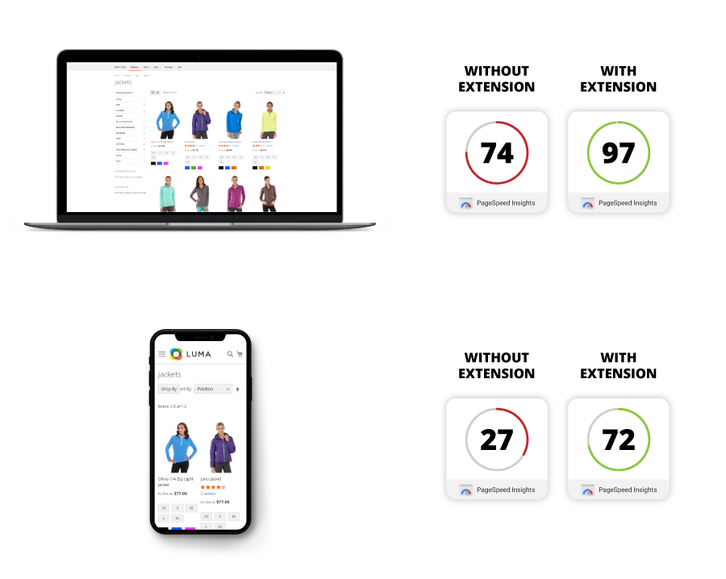
Product Page.
About the Magento 2 Speed Optimization & Advanced JS Bundling module.
The Magento 2 Speed Optimization extension significantly increases your Google Page Speed score, just by installing and configuring the module. This is achieved by implementing a series of improvements such as reducing the number of server requests in an efficient way through the following optimizations:
- Magento 2 Advanced Bundling implementation
- Moving JS files to the bottom of the page
- Preloading CSS files
Magento 2 Advanced Bundling
When using default magento bundling, your site will end up with fewer requests but this process is quite inefficient because it takes all your JS files and bundle the into one big JS file that is loaded on all your pages, leading to increased page size and significantly higher loading time. What you gain by having fewer server requests, you lose by loading unnecessary JS on all your store pages.
Advanced Bundling helps you bundle the JS files in an intelligent way, by creating different types of JS bundles specific to each Magneto page. This way you benefit from the fewer requests while loading only the necessary JS specific for each page type. JS files are bundled in an efficient way, minimizing the page size and providing the speed improvements that your store needs. The Advanced Bundling process is recommended by Magento as a manually applied solution to increase speed, and this module was created to help merchants bypass the high degree of implementation complexity.
Moving JS files to page bottom
By loading your CSS files before your JS files you will be able to show the content of your page faster, and assure optimum surfing experience for the end user. First Paint Score of your page will increase significantly, and the end users will feel that your website is fast and responsive, without endless spinning wheel waiting time while browsing trough your site. Not only will site visitors have a great surfing experience but also search engines will rank your store with a higher speed score, and boost your SEO index.
Preloading CSS files
This feature will also give you an additional speed boost. Stylesheets included in the head section will be downloaded asynchronously, preventing them from blocking the page render and decreasing load times.
Here’s why page speed is a major part of a great user experience - especially for the growing population of mobile users.
-
Reduce Bounce Rate - Increase Conversion Rate!
The Magento 2 Speed Optimization Extension is designed to make your web store user friendly, delivering faster page load times and increasing customer satisfaction. You’ll see a boost on Google Page Speed Insights which in turn will lead to an increase in your overall conversion rate as customers can easily navigate your site.
-
SEO Optimization for a Mobile First Internet.
It’s no secret that the world of SEO is constantly changing. Since 2018 there has been a heavy focus placed on the actual user experience of a website - especially for mobile. Google’s mobile first indexing has been the gold standard, and plays a large role in your rankings. While many sites have switched to a mobile first design, your page speed optimization plays an equally important part.
The Magento 2 Speed Optimization Extension prepares your site for Google mobile first indexing and helps get you back on the front page!
Features of the Extension.
- Increases and optimizes your store's speed. Significantly higher results on Google Page Speed Insights, GT Metrics, Pingdom, Web Page Test.
- Allows for easy implementation of Magento 2 Advanced Bundling in just a few minutes.
- Reduces page size to a minimum when using advanced bundled JS files, compared to default magento bundle process.
- JS Optimization via Terser or custom JS optimizers of your choice.
- Dedicated Magento 2 CLI command for compatibility with Magento 2.4.8 CSP restrictions.
- Ability to add a custom attribute to script tags inserted via the Magento Admin which dynamically generates a nonce for CSP compatibility (addNonce).
- Reduces the number of server requests.
- Allows for JS files loading at the bottom of the page, for better first paint score.
- Allows the preloading of CSS files for even more speed.
- Easy installation and configuration.
HOW TO INSTALL
This extension is installed via Composer, which is the official and only supported installation method.
Step 1: Prerequisites
- Ensure your Magento version is compatible (2.3.0 - 2.4.8 and all Security Patches)
- Install on a testing/development environment first
- Set Magento to developer mode before installation
- Make sure you have Composer installed on your server
php bin/magento deploy:mode:set developer
Step 2: Access Composer Configuration
Head into the Downloadable Products section of your weltpixel.com account. This is where you'll be able to see your Composer Configuration Commands.
You'll need to have Composer installation enabled for your account. If you don't see the Composer Configuration Commands, please contact our support team.
Step 3: Configure Repository
Run the generated commands from your account. Example commands:
composer config repositories.weltpixel composer https://weltpixel.repo.packagist.com/your-id/
composer config --global --auth http-basic.weltpixel.repo.packagist.com token your-token
These commands will provide you access to the WeltPixel repository. Replace 'your-id' and 'your-token' with the actual values from your account.
Step 4: Install via Composer
Run the following command in your Magento root directory:
composer require weltpixel/m2-weltpixel-speed-optimization
Step 5: Enable and Setup
Run the following commands:
php bin/magento setup:upgrade php bin/magento setup:di:compile php bin/magento setup:static-content:deploy -f
Step 6: Cache Management
Flush any caches:
php bin/magento cache:flush
Step 7: Production Mode
If your store was in production mode, switch it back:
php bin/magento deploy:mode:set production
Wooohooo! The extension is now installed on your Magento store! Congrats!
How to Upgrade the Extension
- Step 1: Run: composer update (for the package)
- Step 2: Run setup commands: php bin/magento setup:upgrade, php bin/magento setup:di:compile, php bin/magento setup:static-content:deploy -f
- Step 3: Flush cache: php bin/magento cache:flush
Configure the Speed Optimization extension.
Magento Core Options are included in the module for visibility. Once the store is placed in Production mode, these Magento Core options are hidden, but will always be visible in this section.
- Go to Admin > WeltPixel > Speed Optimizaton > Speed Optimization Settings
-
Speed Optimization General Settings
- Enable - [ Yes / No ] Enable / Disable the Speed Optomization module for your store.
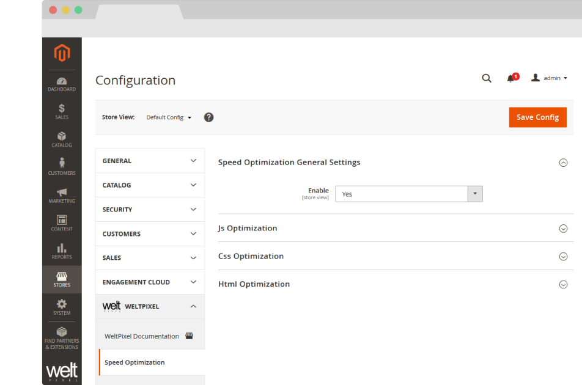
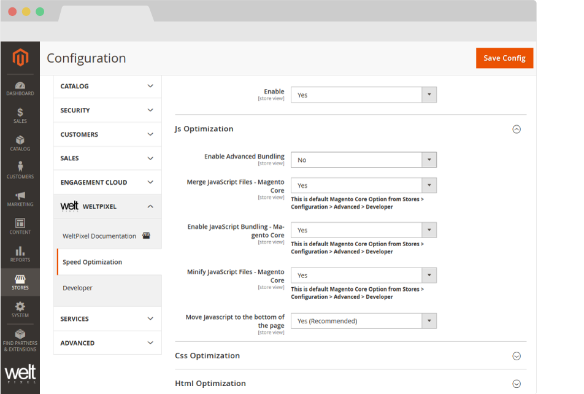
JS Optimization
- Enable Advanced Bundling - [ Yes / No ] Enable / Disable the Advanced JS Bundling functionality. For best performance, it's recommended to complete the Advanced Bundling process. Instructions on how to configure Advanced Bundling can be found in the guide below.
- Merge JavaScript Files - Magento Core - [ Yes / No ] Enable / Disable the merging of JavaScript files. This is a Magento Core option.
- Enable JavaScript Bundling - [ Yes / No ] Enable / Disable the bundling of JavaScript files. This is a Magento Core option.
- Minify JavaScript Files - [ Yes / No ] Enable / Disable the minification of JavaScript files. This is a Magento Core option.
- Move JavaScript to the bottom of the page - [ Yes / No ] Enable / Disable the moving of JavaScript files to the bottom of the page for faster page load. This functionality is also available in the Magento Core starting with Magento 2.3.2. The Core option is only available in Developer mode and can be found in Admin -> Stores -> Configuration -> Advanced -> Developer -> JavaScript Settngs -> Move JS code to the bottom of the page. Magento versions <= 2.3.1 only benefit from this functionality with the Speed Optimization module. For best performance, it's recommended to set this option to Yes.
CSS Optimization
- Merge CSS Files - Magento Core - [ Yes / No ] Enable / Disable the merging of CSS files. This is a Magento Core option. For best performance, it's recommended to set this option to Yes.
- Minify CSS Files - Magento Core - [ Yes / No ] Enable / Disable the minification of CSS files. This is a Magento Core option. For best performance, it's recommended to set this option to Yes.
- Enable CSS Preload - [ Yes / No ] Enable / Disable the preloading of CSS files. If set to Yes, stylesheets included in the head section will be downloaded asynchronously, preventing them from blocking the page render and decreasing load times. For best performance, it's recommended to set this option to Yes.
-
Preload all CSS Files - [ Yes / No ] Enable / Disable the preloading of all CSS files. If set to Yes, all CSS files will be preloaded, including Media Query CSS files, which are excluded if this option is set to No.
Note: If enabled, depending on server speed, there may be a flash of unstyled content, until all styles are downloaded and applied.
- Remove print.css from loading - [ Yes / No ] Set to yes to prevent the deafult Magento print.css file from loading into the head section of the store, thereby reducing overall loading time.
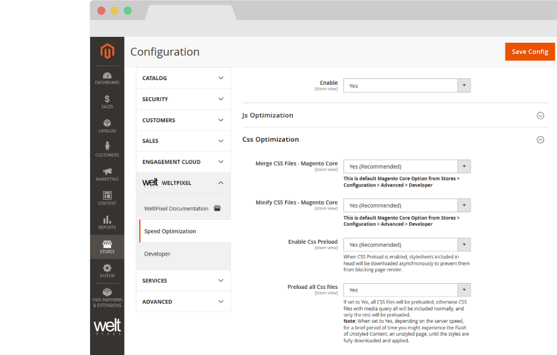
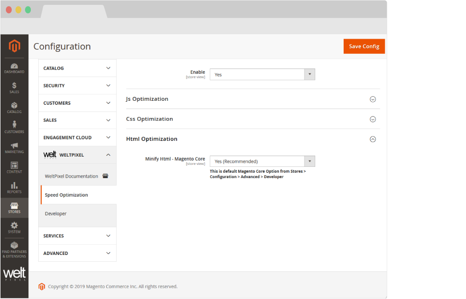
HTML Optimization
- Minify HTML - Magento Core - [ Yes / No ] Enable / Disable the minification of HTML. This is a Magento Core option. For best performance, it's recommended to set this option to Yes.
What is Advanced JavaScript Bundling.
Bundling JavaScript files for better performance is about reducing two things:
- The number of server requests.
- The size of those server requests.
In a modular application, the number of server requests can reach into the hundreds. The goal of JavaScript bundling is to reduce the number and size of requested assets for each page loaded in the browser. To do that, we want to build our bundles so that each page in our store will only need to download a common bundle and a page-specific bundle for each page accessed.
Configuring Advanced Bundling.
Prerequisite Tools
These tools need to be installed on your server in order for this process to work. In case you don't know if they're installed, or you're having trouble installing them, get in touch with your hosting partner.
nodejs
Note: This applies to Debian and Ubuntu based distributions. If you need to install nodejs on other distributions, check the nodejs Package Manager installation page, or with your hosting partner.
If you have a user with sudo access, you can install nodejs using the following command:
sudo apt-get install -y nodejs
You can then check to make sure node.js is installed with the following command:
npm --v
require.js
If you already have nodejs installed on the server, you can install require.js using the following command, issued from the root of your Magento installation:
npm install requirejs
You can confirm require.js is installed by running:
r.js
If the response is as follows, require.js is installed:
See https://github.com/requirejs/r.js for usage.
If you're unable to install via this method, check the official require.js page and verify with your hosting partner.
If you're on Magento Cloud, there is a read-only limitation on the environment so these commands will not normally work. To install require.js, you can add the following command to the Build phase of your deployment process in the .magento.app.yaml file:
npm install requirejs
If this method doesn't work for you, please get in touch with the Magento Cloud Support Team as additional steps may be required to install require.js.
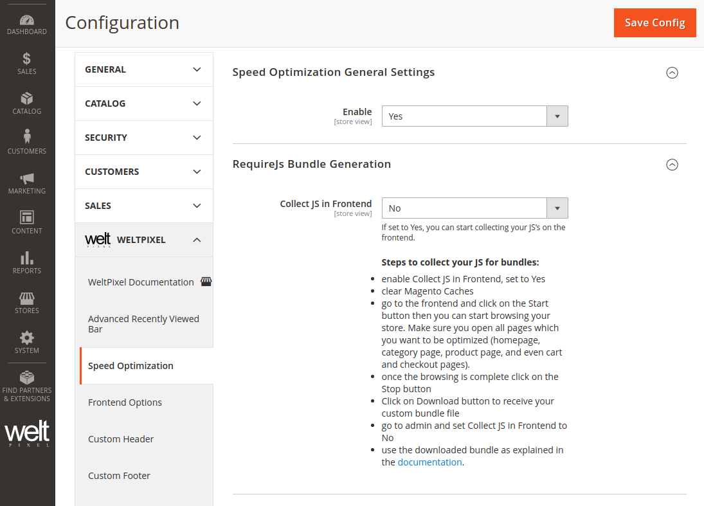
Step 1.
Generating your Custom JS Bundling file.
- Make sure your store is in Developer Mode. You can enable Developer Mode with the php/bin magento deploy:mode:set developer command.
- Enable the Collect JS in Frontend option, found in the Requirejs Bundle Generation section by setting it to Yes and Saving the configuration.
- Flush all your available Magento Caches.
- Go to the frontend and click on the Start button. Then you can start browsing your store. Make sure you navigate to all main pages that you want to have optimized (homepage, category page, product page, and even the cart and checkout pages).
- Once you've completed browsing the store, click on the Stop button.
- Click on Download button to receive the custom JS file generated for your store.
- Go to the Magento Admin and set the Collect JS in Frontend option to No, and flush the Magento caches.
- Rename the downloaded file to advancedbundling_build.js.
- Upload your custom bundling file to your theme in the app/design folder on the server, in the following path: app/design/frontend/vendor/theme_name/
WeltPixel_SpeedOptimization/lib/advancedbundling_build.js
Optional - JS files are optimized by default via Uglify. In this RequireJS Bundle Generation section, you have the option to change the method via which the JS files are optimized, so you can use a custom optimizer such as Terser. For more details about how to use Terser, you can check the Terser JS Optimization section.
Step 2.
- Head into Admin > WeltPixel > Speed Optimizaton > Speed Optimization Settings > JS Optimization
- Set the Enable Advanced Bundling option to Yes. This will automatically disable default magento Merge, Bundling and Minify of the JS files as a different optimization process will be used after switching to production mode.
- Enable Production Mode - You can do this via the command below:
Once Advanced Bundling is set to Yes, a box containing a series of instructions will be displayed.
bin/magento deploy:mode:set production
bin/magento setup:static-content:deploy [your_locale]
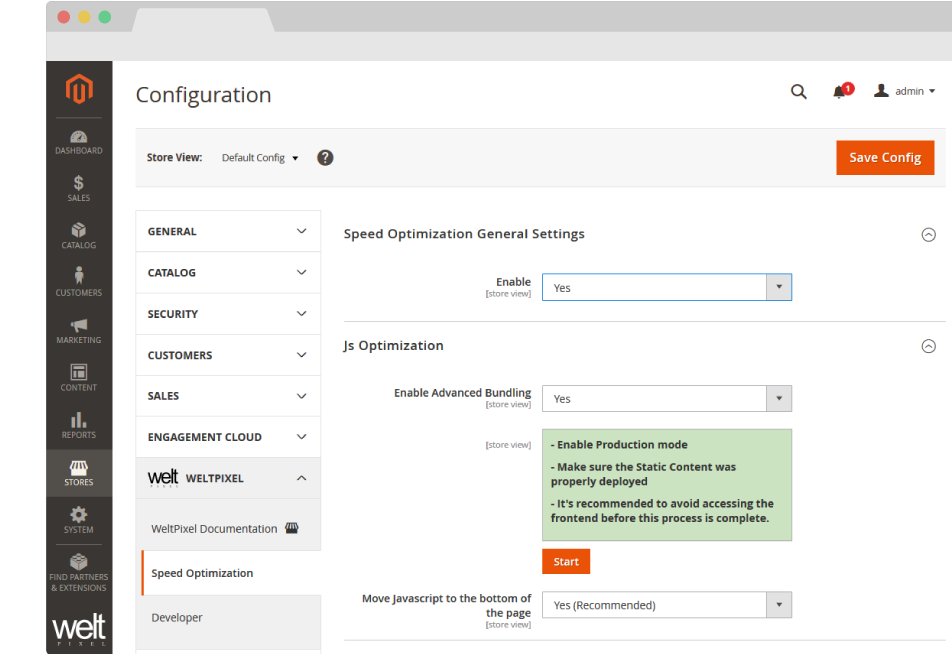
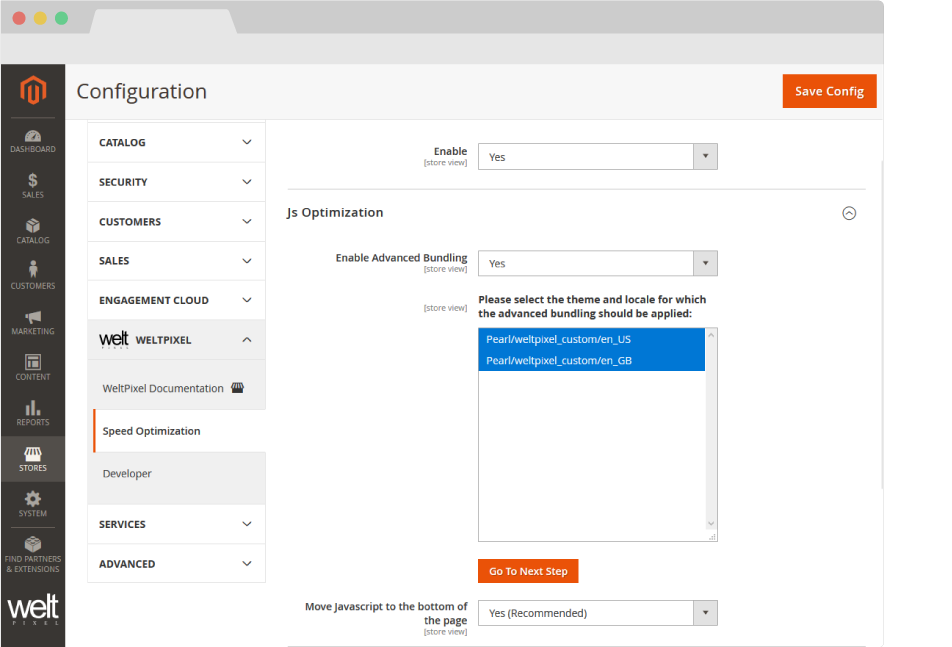
Step 3.
- Select Locale - All available Locales come pre-selected, however, you can choose to apply the Advanced Bundling for any number of Locales.
Step 4.
- Prepared Content - This step of the Advanced Bundling process lets you know that the Static Content for the selected locales has been prepared, and you're ready to move to the next step.
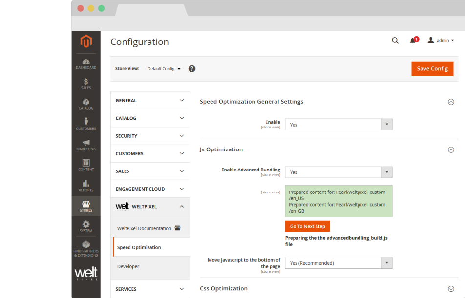
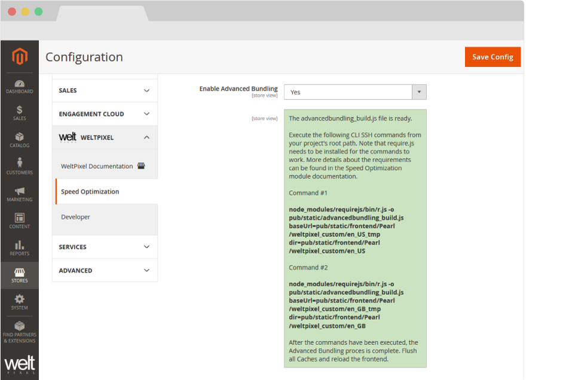
Step 5.
- SSH Commands - This step generates the necessary SSH commands that need to be run in order for the process to be completed. The commands are numbered, depending on the number of Locales that you've selected back in Step 2. The commands will need to be run in order, and you'll have to wait for each command to finish before running the next one. Once all the listed commands have been run, flush the Magento Cache from the Cache Management section. Afterwards, reload the frontend, and the Advanced Bundling should be complete!
-
Note!: If your r.js file is installed in a different location to the one in the generated command, make sure you edit the generated command to contain the full path to r.js on the server. An example would be
/chroot/home/a84jfps/node_modules/requirejs/bin/r.js -o pub/static/advancedbundling_build_Pearl_weltpixel_custom.js baseUrl=pub/static/frontend/Pearl/weltpixel_custom/en_US_tmp dir=pub/static/frontend/Pearl/weltpixel_custom/en_US
-
Note 2!: If you run the bundling on an environment on which you have a lot of custom functionality, you may see errors such as the following (this is only an example, and the error may differ in your case):
Error: Error: ENOENT: no such file or directory, open '//www.searchanise.com/widgets/v1.0/init.js'at Object.openSync (fs.js:443:3)
. This is because there are likely external JS files which are collected from different sources and not inherently present on the Magento instance. In this case, you need to remove all references to the file in question from the advancedbundling_build.js file found in app/design/frontend/vendor/theme_name/WeltPixel_SpeedOptimization/lib and then reupload the file to the server. Afterward, simply run thephp bin/magento weltpixel:requirejs:generate
command and the generated bundling command again. Repeat this process as many times as necessary until the bundling process completes without errors. - Note 3!: If you add new JS scripts to the instance, it's recommended you re-run the bundling process in order to include those as well, for optimal performance, however, this is not mandatory, as the JS script will load normally, even if it's not included in the bundling process.
- Note 4!: If you redeploy the static content on the instance, the current bundling process is invalidated, as the static files are deleted, so you will need to redo the whole process to benefit from the Advanced Bundling again.
CLI commands for deployment scripts.
If you're using deployment scripts on your Magento Instance, you can include the following command in your script, to eliminate the need of preparing the static content for the Advanced Bundling process via the Admin Section. Note: Make sure the Enable Advanced Bundling setting in Admin -> WeltPixel -> Speed Optimization Settings -> JS Optimization is set to Yes. and the config is saved.
php bin/magento weltpixel:requirejs:generate
Regenerate Integrity Hashes - Magento 2.4.8+
If you're using Magento 2.4.8 or later and are experiencing errors related to CSP restrictions or integrity hashes, you can use the command below to regenerate the integrity hashes, which should result in the errors being resolved and the Advanced Bundling process working as expected:
php bin/magento weltpixel:regenerate:srihash
Using a Custom JS Bundling file.
If you need to use a custom bundling file, simply create a new file called 'advancedbundling_build.js' and save it in the following path: app/design/frontend/vendor/theme_name/WeltPixel_SpeedOptimization/lib/advancedbundling_build.js. In the file, you can add your own JS which will be bundled, or remove existing JS if, for any reason, it cannot be bundled or it is not available on your Magento environment. This way, when the JS bundling is done, your file will be used instead of the one generated by the Speed Optimization module. Once you've done this, a command will be generated in the Magento Admin (or via the CLI) which you will need to run in order to successfully complete the Advanced JS Bundling process.
Implementing the Advanced Bundling process on Magento Cloud.
Magento Cloud instances are mostly read-only and do not permit generating files on the fly using the method our Speed Optimization extension implements. As such, there are two methods that can be used to implement the Advanced Bundling process on a Magento Cloud environment. The first step for implementing the Advanced Bundling process on the Cloud instance is ensuring the Static Content Deploy takes place in the Deploy phase, and not the Build phase - Deploying the Static Content in the Deploy phase keeps the pub/static folder writable, which means that the extension can complete the bundling process.
Method 1.
- Clone the Magento Cloud instance to a local environment or server on which the Magento instance can be placed in developer mode.
- Follow Step 1 of the Advanced Bundling process described above on a local instance that is identical to the Magento Cloud instance. It's important that the instances are identical to assure the same JS files get bundled.
- Add the advancedbundling_build.js file you obtained to the following path on your cloned Cloud instance: app/design/frontend/vendor/theme_name/WeltPixel_SpeedOptimization/lib/advancedbundling_build.js.
- Edit the .magento.env.yaml file to ensure SCD happens in the Deploy phase on your Cloud instance.
- Add the php ./bin/magento weltpixel:requirejs:generate command to the Deploy phase in the .magento.app.yaml file. This will eliminate the need to run the process via the Magento Admin.
- Add, commit and push your changes to the Cloud instance.
- After the deploy is finished, check the Cloud Log in your Cloud Dashboard for the node command(s) you need to run.
- Run the generated command(s) via SSH. Make sure your Cloud instance has the prerequisite modules installed (node.js and require.js).
- Once the command has finished running, the Advanced Bundling process should be complete.
Method 2.
- Clone the Magento Cloud instance to a local environment or server on which the Magento instance can be placed in developer mode.
- Follow Step 1 of the Advanced Bundling process described above on a local instance that is identical to the Magento Cloud instance. It's important that the instances are identical to assure the same JS files get bundled.
- Follow Steps 1-5 from the Advanced Bundling process described above on your local instance.
- After successfully completing the steps on the local instance, head into pub/static/frontend/vendor/theme_name/locale/ and copy the bundles folder to the following path on your cloned Cloud instance: app/code/WeltPixel/SpeedOptimization
- Edit the .magento.env.yaml file to ensure SCD happens in the Deploy phase on your Cloud instance.
- Add the cp -r app/code/WeltPixel/SpeedOptimization/bundles /pub/static/frontend/vendor/theme_name/locale command to the Post-Deploy phase in the .magento.app.yaml file. This assures the generated bundles folder is in the correct location.
- If you have multiple locales, make sure you copy the bundles folder to each one of your locale folders. Add, commit and push your changes to the Cloud instance.
- Once the command has finished running, the Advanced Bundling process should be complete.
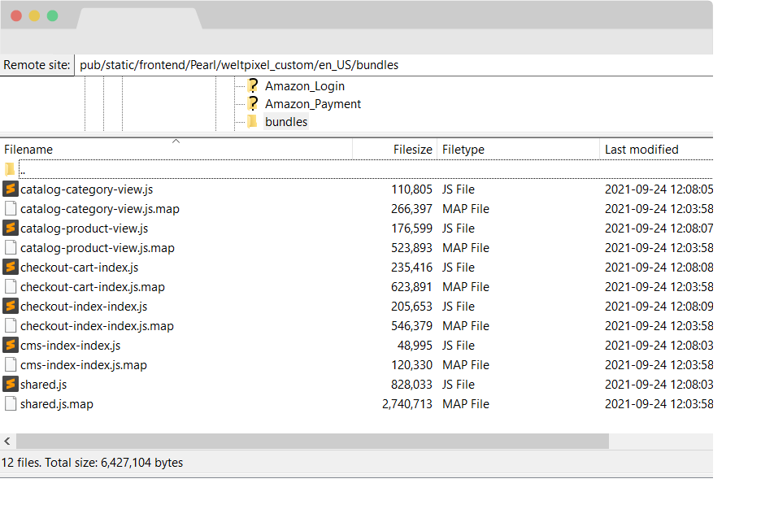
How to check and confirm the Advanced Bundling process was successful.
After following all the steps above, the next thing to do is to check to confirm the Advanced JS Bundling was correcly applied. This can be done in two ways that we'll go over below.
Method 1 - Ensuring the bundles folder exists in pub/static
This can be done quite easily by navigating into pub/static/frontend/theme_vendor/theme_name/locale and ensuring there's a bundles folder present. Inside the bundles folder, you should find .js and .map files for each page type you completed the JS Collection process on, as well as a shared.js and shared.map file.
Method 2 - Checking the Network tab in the browser console
The second method of verifying that the Advanced JS Bundling was completed successfully is simpler as it does not require you to use FTP software to check the pub/static directory on the server.
All you need to do to verify using this method is to open up your website in a web browser and open the console by right-clicking the page and selecting Inspect.
In the console, select the Network tab and make sure only the JS box is ticked. Reload the page without closing the console and you'll see a list of all the JS files loaded into the page. Usually, a couple hundred JS files would be listed here, however, with the Advanced JS Bundling process completed successfully, this number should be drastically reduced to around 8-20 files, depending on how many external JS sources there are.
You should see a shared.js file on every page, along with a page-type specific JS file. On the Home Page, for instance, you'll see the cms-index-index.js file, while on the Category Page, you would see a file called catalog-category-view.js.
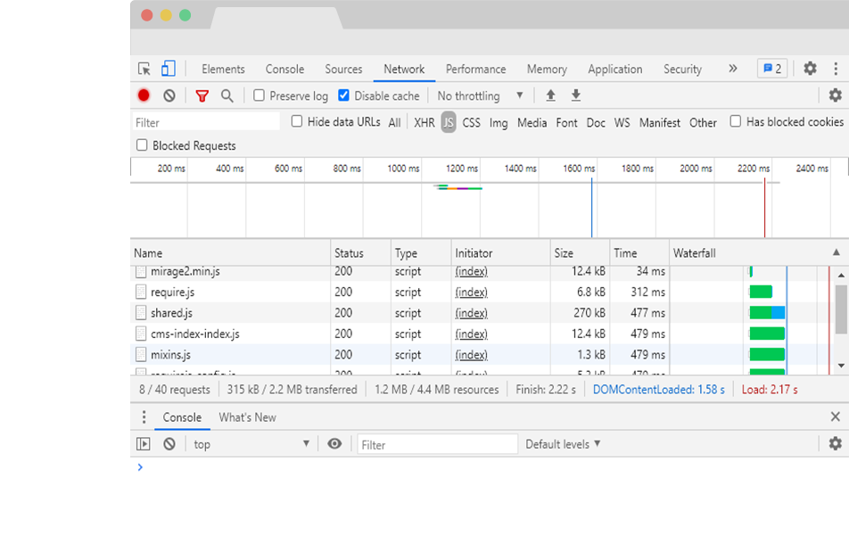
Optimizing JS files via Terser
Terser will need to be installed on your server in order for this process to work. In case you don't know if Terser is installed, or you're having trouble installing it, get in touch with your hosting partner.
Terser
If you already have nodejs installed on the server, you can install Terser using the following command, issued from the root of your Magento installation:
npm install terser
You can confirm Terser is installed by running:
terser -V
If you're unable to install via this method, check the Terser npm package page and verify with your hosting partner.
If you're on Magento Cloud, there is a read-only limitation on the environment so these commands will not normally work. To install Terser, you can add the following command to the Build phase of your deployment process in the .magento.app.yaml file:
npm install terser
If this method doesn't work for you, please get in touch with the Magento Cloud Support Team as additional steps may be required to install require.js.
Once Terser is successfully installed on your environment, you can use it instead of the standard Uglify JS Optimization method to optimize the collected JS for the Bundling Process. To do so, head into the RequireJS Bundle Generation of the Magento Admin and set the Optimization Method option to None. Afterward, run through the Advanced JS Bundling process as described in the documentation and, during the final step, a specific Terser command will be generated for you to run via the Command Line, which will optimize the JS files via Terser. The command will look something like this:
find pub/static/frontend/Pearl/weltpixel_custom/en_US \( -name '*.js' -not -name '*.min.js' \) -exec node_modules/terser/bin/terser \{\} -c -m reserved=\['$','jQuery','define','require','exports'\] -o \{\} \; -exec echo \{\} \;Note: Depending on where Terser is installed on your server, you may need to edit the command to run from the correct location.
Further Optimization for Apache Servers.
There are some additional steps that you can take in order to squeeze even more speed out of your Magento 2 store. On Apache Servers, you can edit the .htaccess file found in the root of your project by adding the following for an even greater speed boost, courtesy of the Nexcess Docs.
This section discusses how to compress both static content such as text, CSS, JavaScript, and individual HTML files, and dynamic content such as content generated by CMSs like Magento, WordPress, and ExpressionEngine, among others.
Static content: This will activate the Apache mod_deflate module and compress static resources into smaller files before transfer to the browser. To enable, uncomment the appropriate lines as shown below:
############################################
## enable apache served files compression
## http://developer.yahoo.com/performance/rules.html#gzip
# Insert filter on all content
SetOutputFilter DEFLATE
# Insert filter on selected content types only
AddOutputFilterByType DEFLATE text/html text/plain text/xml text/css text/javascript application/javascript
# Netscape 4.x has some problems...
BrowserMatch ^Mozilla/4 gzip-only-text/html
# Netscape 4.06-4.08 have some more problems
BrowserMatch ^Mozilla/4\.0[678] no-gzip
# MSIE masquerades as Netscape, but it is fine
BrowserMatch \bMSIE !no-gzip !gzip-only-text/html
# Don't compress images
SetEnvIfNoCase Request_URI \.(?:gif|jpe?g|png)$ no-gzip dont-vary
# Make sure proxies don't deliver the wrong content
Header append Vary User-Agent env=!dont-vary
Attention: The following will not function on LiteSpeed servers. Browsers use Expires headers to define the lifespan of cached page components. While all page components should include Expires headers, static components and images should use far-future Expires headers. To activate this feature, uncomment the appropriate line and, directly above it, add ExpiresActive On. For example:
############################################
## Add default Expires header
## http://developer.yahoo.com/performance/rules.html#expires
ExpiresActive On
ExpiresDefault "access plus 1 year"
ETags allow browsers to validate cached page components from visit to visit. While useful, they can hamper websites hosted on server clusters in some cases. Disabling them as follows will often improve performance:
############################################
## If running in cluster environment, uncomment this
## http://developer.yahoo.com/performance/rules.html#etags
FileETag none
Change Log.
What's new in v.1.16.0 - January 7, 2026
- Giving back: As a celebration of over 10 years of activity within the Magento 2 ecosystem, and as a way to give back to the community, a number of WeltPixel extensions (both FREE and paid) have officially gone fully Open Source via public Github repositories. Find the full list on Github.
- New Feature: Introduced composer as the official and singular installation method for all WeltPixel products. Previously, this was only available for the PRO version of the Google Analytics 4 extension, as well as the Marketing Suite Pro.
What’s new in v.1.15.9 - October 28, 2025
- Magento Compatibility: Introduced compatibility with the latest released Magento 2 Security Patches - Magento 2.4.8-p3, Magento 2.4.7-p8, Magento 2.4.6-p13, Magento 2.4.5-p15 & Magento 2.4.4-p16.
- New Feature: Added improvements to Magento Admin messaging around Product Updates to ensure visual clarity for users not running the latest product release.
- New Feature: Added .ddev.site and .cloudwaysapps.com as accepted development domains. These domains will no longer require additional license keys.
- Fixed a notice related to a minor PHP 8.4 incompatibility that would be displayed in the Magento logs.
What’s new in v.1.15.7 - September 2, 2025
- New Feature: The extension now allows for adding a custom attribute to script tags inserted via the Magento Admin (addNonce) which dynamically generates a nonce on the frontend for CSP compatibility.
- Magento Compatibility: Introduced compatibility with the latest released Magento 2 Security Patches - Magento 2.4.8-p2, Magento 2.4.7-p7, Magento 2.4.6-p12, Magento 2.4.5-p14 & Magento 2.4.4-p15.
- Added additional validations to prevent Magento Admin errors when the Backend extension could not fetch the current server user due to permissions issues.
- Added adjustments to frontend templates to adhere to Magento Best Practices regarding XSS validations.
- Fixed a CSP issue that would sometimes prevent orders from being created via the Magento Admin.
What’s new in v.1.15.3 - June 20, 2025
- Magento Compatibility: Introduced compatibility with the latest Magento 2.4.8-p1, 2.4.7-p6, 2.4.6-p11 & 2.4.5-p13 Security Patches releases. Upgrade ASAP to keep your store secure.
- Fixed the Backend functionality that enables users to change the default Magento CSP Restriction Mode via the Magento Admin. This was broken starting with Magento 2.4.7.
- Fixed an error that would be thrown on the checkout after running the Advanced Bundling process by excluding several core files from the bundle generation process.
- Added a patch for Magento versions 2.4.8 and up to account for SRI hash regeneration. Failure to add the patch will result in an error on compilation.
What’s new in v.1.15.0 - April 22, 2025
- Magento Compatibility: Introduced compatibility with the new Magento 2.4.8 release, as well as the accompanying 2.4.7-p5, 2.4.6-p10, 2.4.5-p12 and 2.4.4-p13 Security Patches.
- PHP Compatibility: Introduced compatibilty with PHP 8.4, which is now officially compatible with the latest Magento 2.4.8 version.
- New Feature: Added a new CLI command to ensure compatibility with Magento 2.4.8 checkout CSP restrictions when using Advanced JS Bundling.
- New Feature: Added magento2.docker as a valid domain for development purposes.
- New Feature: Added ddev.site as a valid domain for development purposes.
- Fixed an issue that would prevent certain extension options from correctly applying in Single Store Mode instances.
- Added backend licensing adjustments for compatibility with the Google Analytics & Social Marketing Suite PRO.
What’s new in v.1.14.13 - February 17, 2025
- Magento Compatibility: Introduced compatibility with the newly released Magento 2.4.7-p4, 2.4.6-p9, 2.4.5-p11 and 2.4.4-p12 versions.
- Fixed an issue related to licensing which would prevent license keys from being validated various subdomains.
What’s new in v.1.14.11 - January 15, 2025
- Removed deprecated Magento 2.2.x code version from extension package.
What’s new in v.1.14.9 - November 26, 2024
- Added nonces to some of the extension's frontend scripts to maximize compatibility with Magento's latest restrictions.
- Added minor Magento Admin adjustments to the module status section for increased clarity and compatibility with server-side Social Pixel addons.
What’s new in v.1.14.7 - October 11, 2024
- Compatibility: Introduced compatibility with the latest Magento 2.4.7-p3, 2.4.6-p8, 2.4.5-p10 and 2.4.4-p11 versions, which come with critical security adjustments for the platform. Magento 2 merchants are urged to upgrade to the latest patches ASAP.
- Added various code updates for increased security around the licensing functionality as well as the Help Center and WeltPixel Developer Magento Admin sections.
What’s new in v.1.14.5 - August 23, 2024
- Compatibility: Introduced compatibility with the latest Magento 2.4.7-p2, 2.4.6-p7, 2.4.5-p9 and 2.4.4-p10 versions, which come with critical security adjustments for the platform. Magento 2 merchants are urged to upgrade to the latest patches ASAP.
What’s new in v.1.14.3 - June 20, 2024
- Compatibility: Introduced compatibility with the latest Magento 2.4.7-p1, 2.4.6-p6, 2.4.5-p8, 2.4.4-p9 versions, which come with critical security adjustments for the platform. Magento 2 merchants are urged to upgrade to the latest patches ASAP.
- New Feature: Added a new section in the Magento Admin that checks to make sure the latest product version is installed and notifies in case an update is available, as well as a button that allows for new features to be requested.
What’s new in v.1.14.1 - April 19, 2024
- Confirmed compatibility with the latest Magento 2.4.7 release, as well as newly released 2.4.6-p5, 2.4.5-p7 & 2.4.4-p8 Security Patches.
- Confirmed compatibility with PHP 8.3 on the Magento 2.4.7 release. PHP 8.2 is also supported for this Magento version.
- Added security improvements to the Backend module's license verification process.
What’s new in v.1.11.21 - January 9, 2024
- Fixed an error that would be thrown in the WeltPixel -> Extensions Version admin section when a module's composer.json file was missing the version node.
What’s new in v.1.11.19 - October 19, 2023
- Optimized the license verification process for increased Magento Admin performance, as well as to account for licensing server downtimes.
- Fixed an issue that would sometimes result in an error being thrown when using older PHP versions, such as PHP 7.4.
- Confirmed compatibility with the newly released Magento 2.4.6-p3, 2.4.5-p5, and 2.4.4-p6 Security Patches.
What’s new in v.1.11.17 - June 28, 2023
- Confirmed compatibility with the latest Magento Security Patch releases 2.4.6-p1, 2.4.5-p3 and 2.4.4-p4.
- Fixed an error related to PHP 8.2 that would show when accessing the WeltPixel Debugger.
- Added .localdev as a universally accepted licensing domain.
What’s new in v.1.11.15 - March 22, 2023
- Fixed an issue that would result in a console error being displayed after implementing the Advanced JS Bundling process. This was specific to Magento 2.4.4 and 2.4.5.
- Fixed an error that would sometimes be thrown in the WeltPixel Debugger, depending on various server permissions.
- Added compatibility with the latest Magento 2.4.6 and 2.4.5-p2 versions.
What’s new in v.1.11.11 - November 23, 2022
- Confirmed compatibility with the latest Magento Security Patch releases 2.4.5-p1 and 2.4.4-p2.
What’s new in v.1.11.7 - September 1, 2022
- Fixed an error that was sometimes thrown during the Advanced Bundling process related to the default Magento Vimeo integration.
- Confirmed compatibility with the latest Magento 2.4.5 and 2.4.4-p1 versions - A patch is required for Magento 2.4.0 - 2.4.4 versions due to core changes which are not backwards compatible.
- Updated installation/upgrade scripts to use data patches.
What’s new in v.1.11.1 - April 25, 2022
- Fixed an incorrect licensing message on B2B Magento Enterprise instances which would display when an invalid license was entered.
- Confirmed compatibility with the latest Magento 2.4.4 and 2.3.7-p3 versions as well as PHP 8.1.
What’s new in v.1.10.17 - October 22, 2021
- Confirmed compatibility with the latest Magento 2.4.3-p1 and 2.3.7-p2 versions.
What’s new in v.1.10.15 - August 31, 2021
- New Feature: Added a new JS Optimization functionality via Terser, which can replace the Uglify optimization for increased performance.
- New Feature: Added a new option which allows for excluding print.css from loading in the CSS Optimziation Magento Admin section.
- Confirmed compatibility with the newly released Magento 2.4.3, 2.4.2-p2 and 2.3.7-p1 versions.
- Added .localhost as an accepted domain termination for the licensing process.
What’s new in v.1.10.11 - July 7, 2021
- Added improvments to the WeltPixel Developer Magento Admin section. Latest Cron Jobs now lists the last 100 executed Cron Jobs.
What’s new in v.1.10.9 - May 18, 2021
- Disabled Magento Admin options related to core Magento JS Bundling, Minification and Merging when the store is in production mode.
- Confirmed compatibility with the newly released Magento 2.3.7 and 2.4.2-p1 versions.
What’s new in v.1.10.7 - March 26, 2021
- Excluded Magento 2.0.x - 2.2.x from new features and fixes starting with this release.
- Adjusted WeltPixel Developer section comments.
What’s new in v.1.10.5 - February 12, 2021
- Fixed a bug that caused the Summary section to disappear from Bundle Product Pages when the "Move JS to Bottom of the Page" functionality was enabled.
- Confirmed compatibility with the newly released Magento 2.4.2 version.
- Added additional backend versioning verifications.
- Backend module code optimizations.
What’s new in v.1.10.1 - October 22, 2020
- Fixed a small conflict related to the Preload CSS functionality within the module and the default Magento Critical CSS functionality.
- Confirmed compatibility with the newly released Magento 2.4.1 version.
What’s new in v.1.10.0 - August 10, 2020
- Fixed an issue that caused the Minify JavaScript Files - Magento Core option to throw JS errors on the frontend when in producton mode.
- Confirmed compatibility with the newly released Magento 2.4.0 version.
What’s new in v.1.9.8 - July 6, 2020
- New Feature: Implemented a highly optimized version of the Advanced JS Bundling Process. The module can now gather all custom JS files from specific pages and allow for up to 45% faster page load compared to previous versions due to only loading specific js files / page type. The number of JS requests is also drastically reduced.
- New Feature: Added the possibility of excluding individual JS scripts from being moved to the bottom of the page via the extenion's option.
- Fixed a bug which prevented the Translate Inline functionality from working properly when the module was enabled.
- Added translations.
- Code cleanup.
- Whitelisted domain for Content Security Policies introduced in Magento 2.3.5.
What’s new in v.1.9.7 - May 7, 2020
- Fixed a niche bug that caused the mobile menu to kick in on desktop when dragging and dropping an element from the menu, when the Speed Optimization module was enabled.
- Confirmed compatibility with Magento 2.3.5.
- Implemented small Backend performance optimizations.
- Added nxcli.net (Nexcess temporary URL) as a valid domain in the licensing process.
- Added an option in the Developer section to allow for switching Magento's CSP between "report-only" and "restrict".
What’s new in v.1.9.6 - April 9, 2020
- Fixed a Backend issue on Magento Commerce whereby the Category Schedule functionality was not working properly.
What’s new in v.1.9.5 - March 10, 2020
- Fixed an error that occurred on Magento Enterprise when Critical CSS and the Speed Optimization module were enabled.
- Added backend Google reCaptcha compatibility for Magento 2.3.x
What’s new in v.1.9.4 - February 5, 2020
- Fixed an issue which caused the Mega Menu to load vertically on Mozilla Firefox and Internet Explorer - this fix bypasses the Preload CSS admin setting for these browsers.
- Fixed a compatibility issue related to JS Bundling on Magento 2.3.4.
- Code enhancements for increased security. Changed User Group info collection method.
- Confirmed compatibility for Magento 2.3.4.
What’s new in v.1.9.2 - Novemver 27, 2019
- Fixed an issue that caused missing transaction data in Google Analytics due to an incompatibility with the Move JS to Bottom of the Page setting within the Speed Optimization module, when the Google Tag Manager extension was configured.
- Added the possibility of preparing the Advanced Bundling process via SSH command.
- Added a build.js fallback for custom themes.
- Added Magento and PHP version in the WeltPixel Developer section.
What’s new in v.1.9.1 - October 16, 2019
- Fixed an issue whereby an error was thrown when running the Advanced Bundling while Single Store Mode was enabled.
- Fixed an error which occurred when running Swagger with the module enabled.
- Fixed an issue which caused an impossibility to agree to the Terms and Conditions on the Checkoutpage, when enabled via Magento.
- Added the possibility to exclude blocks from being moved to the bottom of the page via Admin Option.
- Confirmed compatibility with the latst Magento 2.3.3 version.
- Included the WeSupply Toolbox integration extension - Proactive Notifications Email & SMS, Returns & RMA, Store Locator, Delivery Date Estimate, Logistics Analytics, NPS & CSAT score. Get Free on-boarding and launch within 24 hours.
What’s new in v.1.9.0 - July 18, 2019
- Initial release.